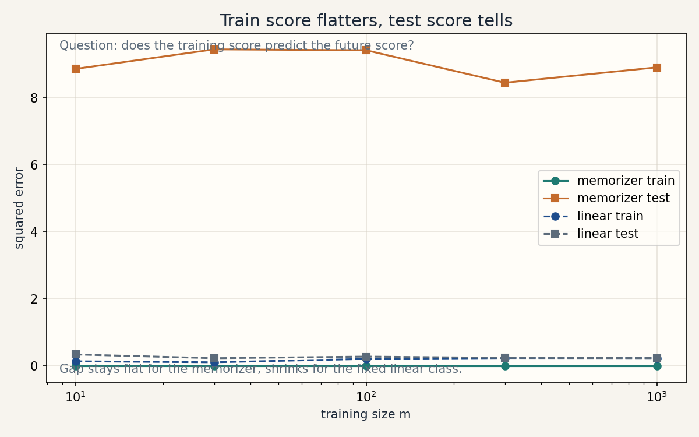
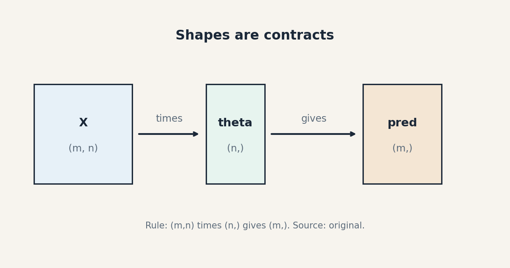

Lesson 01 · Learning problems, risk, setup
Lesson 01, Learning problems, risk, and mathematical setup
Unit: cs229-U01. Leaf concepts: cs229-U01-C01 to C12. Date: 2026-10-06. Baseline: October 6, 2026.
Source mapping
This unit is foundational bridge content. The official notes open with the housing price example and define the hypothesis, the cost function, and the learning pipeline (SRC-01, part 1, pages 7-8 of the PDF). The ToC and those pages were extracted and read. The risk formalism below is standard material used to name the objects the notes rely on. Source attribution for leaf concepts is PENDING until the full chapter pass closes G2.
Scope and objectives
Scope: the objects of every learning problem, the split between fitting and truth, and the math notation used in all later units.
Objectives: after this unit the learner can (1) name features, targets, hypothesis, and parameters in a new problem, (2) state the difference between empirical and population risk, (3) justify why training error is a biased witness of future error, (4) read and write vector and matrix notation with shapes, (5) define a baseline and a measurable task.
Dependencies
Prerequisites: P01, P02, P03, P06, P10 (shared bridges, linked).
Not-yet-understood list for this lesson:
- A feature as a measurable input variable (remediated in SL-01).
- A hypothesis as a fixed function family (remediated in SL-02).
- Risk as an expectation over unseen data (remediated in SL-04).
- Matrix shapes in code (remediated in SL-08).
SL-01: Features, targets, examples, dimensions
Covers C01 (features/targets), C02 (examples versus dimensions).
Motivating question
A hospital wants to predict heart attacks. What goes into the model, and what comes out?
Tiny toy
One patient: age 52, systolic 140, cholesterol 210. Outcome: 1 (heart attack within 10 years). Second patient: age 41, systolic 118, cholesterol 180. Outcome: 0.
Mental model
A feature is one measured input. The target is the answer to predict. One example is one row of features plus its target. The dimension is the count of features. Rows are examples. Columns are dimensions.
Objects, symbols, shapes, assumptions
- Feature vector
x, shape(n,). Heren = 3. - Target
y, a scalar. Hereyis 0 or 1. - Example
i: pair(x^{(i)}, y^{(i)}). The superscript is an index, not a power. - Training set:
mexamples. Shape of the design matrixX:(m, n). - Assumption: features are measured before prediction time. The target is observed later. No peeking.
Computed example
Two patients, m = 2, n = 3:
X = [[ 52, 140, 210],
[ 41, 118, 180]] shape (2, 3)
y = [1, 0] shape (2,)
Example 1 is row 1. Its dimension count is 3. Its target is 1.
Correctness check
Count check: rows of X equal length of y. Columns of X
equal n. This invariant holds in all code in this course.
Nearest alternative
Some problems have no target column. That is unsupervised learning (SL-03), not a broken supervised problem. The split is in the task, not in the data format.
Failure case
A feature that only exists after the target (for example, the surgery report when predicting a heart attack) leaks the answer. The model looks good and is useless. This is target leakage.
SL-02: Hypothesis and parameters
Covers C03 (hypothesis/parameters).
Motivating question
Two students fit a line through the same data and get different lines. What exactly did they choose?
Tiny toy
Data: (x, y) pairs (1, 2), (2, 3), (3, 4). Student A fits
h(x) = 1 + x. Student B fits h(x) = 0.5 + 1.2x.
Mental model
A hypothesis is a rule with dials. The rule is fixed: a line. The dials are parameters: the intercept and the slope. Learning turns the dials. The rule itself is the hypothesis class, chosen by the designer.
Objects, symbols, shapes, assumptions
- Hypothesis
h(x), a function. - Parameter vector
theta, shape(n,), plus intercept. - Linear hypothesis:
h_theta(x) = theta_0 + theta_1 x_1 + ... + theta_n x_n, writtenh_theta(x) = theta^T xwithx_0 = 1folded in. - Assumption: the hypothesis class is fixed before training. The parameters are the only freedom.
Computed example
theta = [1, 1], so h(x) = 1 + x. On the toy data:
x=1: h=2, y=2, error 0
x=2: h=3, y=3, error 0
x=3: h=4, y=4, error 0
theta = [0.5, 1.2], so h(x) = 0.5 + 1.2x. On the same data:
x=1: h=1.7, y=2, error -0.3
x=2: h=2.9, y=3, error -0.1
x=3: h=4.1, y=4, error 0.1
Same hypothesis class, different parameters, different errors.
Correctness check
h_theta(x) is a scalar for each x. The output shape must
match the target shape. If y is a scalar and h returns a
vector, the code is wrong.
Nearest alternative
A nearest alternative is a change of the hypothesis class itself: fit a curve instead of a line. Changing dials stays inside the class. Changing the class changes the dials that exist. Class choice is a design decision (model selection, U09). Parameter choice is a training decision.
Failure case
A hypothesis class with zero dials cannot learn. A class with more dials than examples memorizes. Both extremes fail, for opposite reasons.
SL-03: Supervised, unsupervised, reinforcement learning
Covers C04 (supervised/unsupervised/RL).
Motivating question
When does a dataset have “answers,” and what changes when it does not?
Tiny toy
Supervised: 100 patient rows with outcomes. Unsupervised: 100 patient rows with no outcomes, and we seek clusters. Reinforcement: a game where each move gets a score later.
Mental model
Supervised learning: examples carry targets. The task is to predict the target from the features. Unsupervised learning: examples carry no targets. The task is to find structure: clusters, densities, low-dimensional views. Reinforcement learning: an agent acts, the world responds, reward arrives later. The task is to choose actions that earn future reward.
Objects and assumptions
- Supervised: pairs
(x^{(i)}, y^{(i)}). Assumption: targets are correct often enough to learn from. - Unsupervised: inputs
x^{(i)}only. Assumption: structure inxis worth finding. - RL: states, actions, rewards, a policy. Assumption: reward correlates with the true goal (U15 examines when it does not).
Computed example
Supervised accuracy on 10 held-out patients: 8 correct, 2 wrong. Accuracy 0.8. Unsupervised on the same 10 without labels: 2 clusters, sizes 6 and 4. No accuracy exists, because no labels exist. The evaluation must change with the task.
Nearest alternatives
Self-supervised learning (U13) invents targets from the data itself, for example predicting a missing word. It is supervised machinery on unsupervised data. Semi-supervised learning uses a few labels plus many unlabeled examples.
Failure case
Treating an unsupervised task with supervised metrics invents fake accuracy. Clustering has no “correct” label order, so accuracy against arbitrary cluster names is meaningless.
SL-04: Empirical risk and population risk
Covers C05 (empirical/population risk).
Motivating question
Your model scores 98 percent on the data you trained on. What will it score on tomorrow’s patients?
Tiny toy
A coin. Train on 10 flips: 7 heads. A model that always says heads scores 70 percent on the training flips. The true chance of heads is 0.5. The training score lies upward.
Mental model
Empirical risk is the average loss on the training set. It is a count on data you own. Population risk is the average loss over all future data from the same source. It is the quantity you actually care about. Training minimizes the first and hopes about the second.
Objects, symbols, assumptions
- Loss
L(h(x), y), scalar, lower is better. - Empirical risk:
R_hat(h) = (1/m) sum_i L(h(x^{(i)}), y^{(i)})). A computable number. - Population risk:
R(h) = E[L(h(x), y)]. An expectation over unseen data. Not directly computable. - Core assumption: training and future data come from the same distribution (SL-06).
Derivation
Why can the learner not just minimize population risk? It has no
access to the expectation, only to m samples. The empirical
risk is the sample estimate. Minimizing it is justified when the
estimate is close to the truth, which is exactly what
generalization theory (U08) quantifies.
Computed example
Classifier on 100 training patients: 2 wrong. Empirical risk with 0/1 loss: 0.02. On 1000 fresh patients: 150 wrong. True risk estimate: 0.15. The gap is 0.13. The training number flattered the model.
Correctness check
If empirical risk exceeds the fresh-data risk on a large sample, suspect a bug or a distribution shift. In the standard setting, empirical risk is the optimistic one.
Complexity note
Empirical risk costs O(m) per evaluation. Population risk is never computed directly. It is estimated with held-out data.
Nearest alternative
Cross-validation estimates population risk better than a single training score (U09). It is still an estimate, not the truth.
Failure case
A model that memorizes the training set drives empirical risk to zero and population risk up. This is overfit. The mechanism: the hypothesis class had enough dials to fit noise.
Research reading
The generalization gap is the central object of learning theory. U08 derives bounds on it. Falsifiable extension: on a synthetic dataset with known noise level, measure the gap as a function of hypothesis class size and compare with the bound.
Russian-doll ladder for the risk mechanism
- Shell 0: Question: does the training score predict the future score? Observable: the gap on fresh data.
- Shell 1: Toy: the coin, 10 flips, always-heads model.
- Shell 2: Objects: loss, empirical risk, population risk.
- Shell 3: Rule: same distribution, large
m, gap shrinks. - Shell 4: Derivation: empirical risk as a sample mean of the true expectation.
- Shell 5: Invariant: empirical risk <= fresh risk in expectation for a fixed hypothesis chosen before seeing data.
- Shell 6: Change one factor: raise
mfrom 10 to 10,000. Gap shrinks. Controls: same coin, same model. - Shell 7: Counterexample: pick the hypothesis after seeing the data (memorizer). Empirical risk is 0, gap is huge.
- Shell 8: Compare: cross-validated risk estimate vs single training score under equal compute.
- Shell 9: Extension: measure gap vs class size on synthetic data. Falsify the claim that the gap always grows with size.
- Shell 10: Production: deploy the memorizer. The stakeholder sees training 100 percent, production 60 percent. The decision: gate releases on held-out metrics only.
SL-05: Losses
Covers C06 (losses).
Motivating question
Why do we train on one number and report another?
Tiny toy
Predict house prices. True 400k, predicted 350k.
Mental model
A loss scores one prediction. Squared loss (y_hat - y)^2
punishes large errors hard. Zero-one loss counts mistakes. The
loss is the training steering wheel. The metric is the business
scorecard. They often differ: you train with squared loss and
report median error.
Computed example
True 400k, predicted 350k. Squared loss: (50,000)^2 = 2.5e9.
Absolute loss: 50,000. Zero-one loss is not defined for
regression. It needs a right/wrong verdict.
Binary targets, predicted probability 0.8, true 1. Log loss:
-log(0.8) = 0.223. Predicted 0.2, true 1: -log(0.2) =
1.609. The loss grows as confidence in the wrong answer grows.
Correctness check
Loss is a scalar. It must be lower for better predictions on fixed data. If a “loss” goes up when predictions improve, the sign is wrong.
Nearest alternative
Use the business metric directly as the loss when it is smooth enough to optimize. Use a smooth proxy loss when the metric has flat pieces (see diagnostic D08).
Failure case
Squared loss on data with a recording error of 10 million dollars lets one bad row dominate the fit. Heavy-tail losses or data cleaning are the fix (U09).
SL-06: Train/test assumptions
Covers C07 (train/test assumptions).
Motivating question
When is it legal to trust the test score?
Mental model
The contract: training data and future data come from the same distribution, and examples do not influence each other (IID). Break the contract and every guarantee in U08 voids.
Objects and assumptions
- IID: independent and identically distributed examples.
- Train/validation/test split: train fits, validation selects, test reports once.
- Assumption: no leakage from test into train.
Computed example
A time series: stock prices by day. Random split puts future days in training and past days in test. The model peeks at the future. Proper split: train on early days, test on later days. The random-split score is a lie.
Failure case
A patient appears in both train and test (duplicate records). The test score measures memory, not learning. Fix: dedupe by patient id before splitting.
Nearest alternative
When IID fails by design (time, space, groups), split by the failure unit: time blocks, hospitals, users. The test must resemble deployment.
SL-07: Optimization versus generalization
Covers C10 (optimization versus generalization).
Motivating question
Your optimizer found the lowest possible training cost. Why might the model still be bad?
Mental model
Optimization asks: how low can the cost go on this data? Generalization asks: how low will the risk be on new data? Optimization is a computation problem. Generalization is a statistics problem. A perfect optimizer can still generalize poorly. A poor optimizer generalizes poorly too, but for a different reason.
Computed example
Two fits on the same 10 points. Fit A: training cost 0.01, test error 0.30 (memorized). Fit B: training cost 0.10, test error 0.12 (simple). Optimization prefers A. Generalization prefers B. The two goals disagree here.
Nearest alternative
Early stopping (U09) halts optimization before it harms generalization. It trades a higher training cost for a lower test error.
Failure case
Blaming the optimizer for a generalization failure: tuning the learning rate will not fix a hypothesis class that is too rich. Diagnose which of the two problems you have first.
SL-08: Vector notation and matrix shapes
Covers C08 (vector notation), C09 (matrix shapes).
Motivating question
How do you read theta^T X^T X theta without fear?
Mental model
A vector is a list with a direction. A matrix is a table. The shape is the contract: it tells you what can multiply what. Notation is compressed code. Expand it once and it stops being scary.
Objects, symbols, shapes
xin R^n: column vector, shape(n,).x_iis entryi.Xin R^{m x n}:mrows (examples),ncolumns (features).X^T: transpose, shape(n, m). Entry(i, j)ofX^Tequals entry(j, i)ofX.theta^T x: row times column, a scalar. Dot product.X theta: shape(m,). The prediction for all examples at once.
Computed example
X = [[1, 2],
[3, 4]] shape (2, 2)
theta = [1, -1] shape (2,)
X theta = [1*1 + 2*(-1), 3*1 + 4*(-1)] = [-1, -1] shape (2,)
X^T X has shape (2, 2). X^T y has shape (2,). The
normal equations (X^T X) theta = X^T y are (2,2)(2,) =
(2,). Shapes balance on both sides.
Minimal implementation
import numpy as np
X = np.array([[1.0, 2.0], [3.0, 4.0]])
y = np.array([5.0, 11.0])
theta = np.array([1.0, 2.0])
pred = X @ theta # shape (2,)
assert pred.shape == (2,)
gram = X.T @ X # shape (2, 2)
assert gram.shape == (2, 2)
rhs = X.T @ y # shape (2,)
assert rhs.shape == (2,)
Expected output: no assertion errors. pred equals
[5.0, 11.0].
Correctness check
Shape audit: every matrix product in this course must balance
like the example above. A (m, n) times a (n,) gives (m,).
A (n, m) times a (m,) gives (n,). When shapes do not
balance. The formula is wrong or a transpose is absent.
Failure case
Confusing x^{(i)} (example index) with x_i (feature index)
or with a power. In this course the superscript in parentheses
is always the example index. A power is written without
parentheses.
SL-09: Baselines and measurable tasks
Covers C11 (baseline), C12 (measurable task).
Motivating question
Before the first model, what do you write down?
Mental model
A baseline is the dumbest method that still uses the data: the mean for regression, the majority class for classification. It sets the bar. A measurable task states the data, the metric, and the decision rule: what ships if the metric hits the target.
Computed example
House prices: mean of training prices 520k. Baseline prediction: 520k for every house. Mean absolute error of the baseline: 85k. Any model must beat 85k MAE on the test set to earn its place.
Correctness check
If a fancy model cannot beat the mean, either the features carry no signal or the model is broken. Both are useful findings.
Nearest alternative
A domain heuristic can serve as the baseline instead of a statistical one: “predict the last known price”. Choose the strongest dumb method, not the weakest.
Failure case
A task with no decision rule (“explore the data”) cannot fail and cannot succeed. Measurable means: metric, threshold, and what happens at the threshold.
Assessment
Breadth recall
E01: Name the four objects of a supervised problem in the
hospital toy.
E02: State the shapes of X, y, and theta for 50 examples
with 7 features.
E03: Define empirical risk in one sentence.
E04: Give one example of target leakage.
E05: Why is a training score optimistic?
E06: Write squared loss and log loss for a single prediction.
Deep oral ladder
L01: (1) Define population risk. (2) Toy: the coin example. (3) Derive why the empirical risk is a sample mean of the population risk. (4) Implement the shape-audit code for a new dataset. (5) Compare train/test split vs cross-validation as risk estimators. (6) Debug: test error is lower than train error. Name two causes. (7) Critique: when does the IID assumption fail for hospital data? (8) Design: a release gate that blocks models whose held-out gap exceeds a threshold.
L02: (1) Define a baseline. (2) Toy: the majority-class baseline on the hospital readmission data. (3) Compute the empirical risk of the baseline and of a fitted model on the same test split. (4) Implement the train/test evaluation for both. (5) Compare 0/1 loss for training against 0/1 accuracy for reporting. (6) Debug: the model beats the baseline on train and loses on test. Name the cause. (7) Critique: when is the baseline the right ship decision? (8) Design: a measurable task spec (data, metric, gate) for the readmission problem.
Analytical exercise
E07: 200 examples, 10 features, 0/1 loss, 30 train errors, 46 test errors on 200 fresh examples. Compute empirical risk and the gap. Answer in keys.
E13: 400 train examples, squared loss, train MSE 0.09, test MSE 0.25 on 400 fresh examples. Compute train RMSE, test RMSE, and the MSE gap. Does the gap alone prove overfitting? Answer in keys.
Failure diagnosis
E08: A model shows train accuracy 1.0 and test accuracy 0.5 on balanced classes. Diagnose and propose two distinct fixes.
Counterfactual comparison
E09: Two teams. Team A uses 0/1 loss for training with gradient descent. Team B uses log loss and reports 0/1 accuracy. Which trains? Which reports the business metric? Justify.
Research question
E10: On synthetic data with known label noise, the empirical risk of a memorizer is zero while the population risk equals the noise rate. Design an experiment that measures this gap as a function of training set size. State the falsifiable claim.
Implementation task
E11: Write the shape-audit snippet for a dataset with 1000
examples and 20 features. It must assert the shapes of X,
y, pred, gram, and rhs.
Changed-constraint scenario
E12: The hospital deploys in a new city where patients are younger. Which assumption breaks? What changes in the evaluation protocol?
Visual units
visuals/u01/u01_risk_vs_empirical.png: train vs test error gap on a memorized toy (source: original, computed).

visuals/u01/u01_shapes.png: annotated shapes of X, theta, y (source: original, diagram).

Research reading and extension
Read: the notes’ opening (SRC-01 pp. 7-8) for the hypothesis
and cost notation this course follows. Extension: implement the
memorizer vs the linear fit on synthetic 1-D data and plot the
gap as a function of m. The falsifiable claim: the gap
shrinks as m grows for the fixed linear class, and stays flat
for the memorizer.